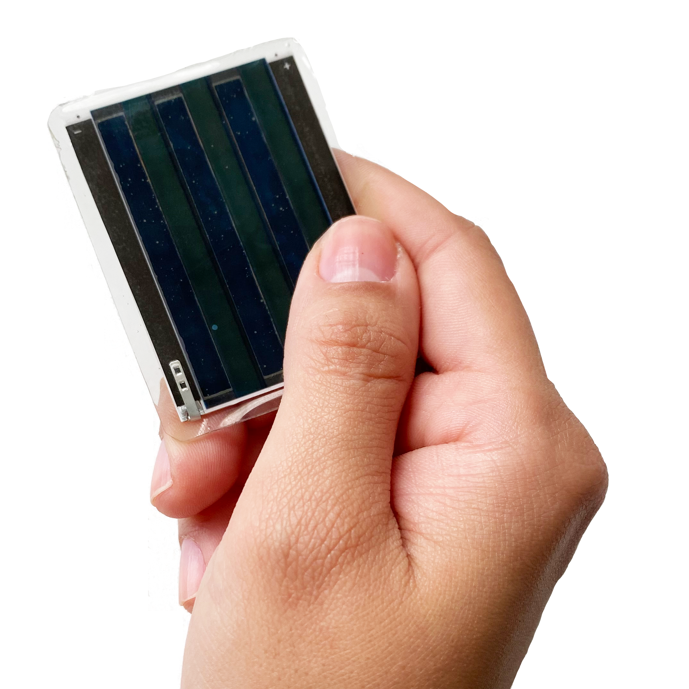
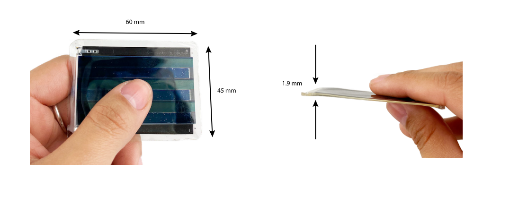

MiroCard
A batteryless, light-powered BLE smart card. An open-source research project.

Batteryless
MiroCard's optimized hardware needs very little light to operate, and it wakes up within few seconds.

Efficient
The MiroCard can sense its environment and communicate via BLE multiple times per second.

Secure
When your MiroCard is in your wallet, it cannot be remotely powered, keeping your data safely in pocket.
High-performance
Card-Sized.
Compared to passive RFID cards, the active MiroCard has significantly more processing power and memory. This opens up new, secure applications with web-based authentication.

Universal Compatibility Enabled by Bluetooth.
MiroCards can communicate with millions of BLE-compatible devices. Applications can easily integrate services like user authentication or contact tracing using the MiroCard.

Want to know more?
Watch our webinar.
The innovative technologies behind the MiroCard are backed by years of research from top European universities and start-ups. In the webinar, the three main components of the MiroCard are discussed: organic solar cell by Epishine, harvesting chips by e-peas, and Miromico's batteryless sensing technology.

Technical Specifications
The MiroCard has conveniently small form factor. Less than 2 mm thick, its surface area (60 mm x 45 mm) is smaller that a credit card. The hardware has been optimized for fast wake-up times, even in indoor lighting conditions. It takes a few seconds for the card to energize and broadcast BLE packets. It can emit up to 16 packets per second, in indoor environments with natural light. The solar cell has a rated lifetime of 10 years, ensuring long-term indoor deployments.

Open-Source
The MiroCard and MiroReader app were designed by Andres Gomez, inspired by the Transient BLE Node project developed at ETH Zurich (released under CC BY 4.0). The MiroCard hardware, firmware and apps are open source under the BSD 3-Clause License. The MiroCard was presented at ACM SenSys 2020: Demo Abstract: On-Demand Communication with the Batteryless MiroCard.
MiroCard Hardware
- Datasheet, schematics and Altium PCB project.
MiroCard Firmware
- Contiki-NG platform and example applications.
MiroReader Android App
- Android app to receive and visualize MiroCard data.
More tools: Python scanner · MQTT bridge · InfluxDB bridge · Web Bluetooth demo · Measurement post-processing · Plotly visualization
Contact
The MiroCard was developed as a research project in 2020–2022. For questions, contact Andres Gomez.